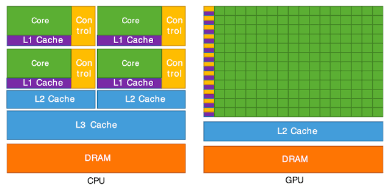

Understanding GPU Basics
As you're probably aware, we're living in the age of the AI boom. Large Language Models (LLMs) like ChatGPT, Claude, and DeepSeek are widely used by millions of people. However, have you ever sat down and asked yourself what kind of hardware these LLMs run on?
These LLMs primarily run on specialized processors known as GPUs (Graphics Processing Units). In this blog, my goal is to help you, the reader, understand what a GPU is and how it differs from a CPU (Central Processing Unit).
Without further ado, let's begin our quest to understand what a GPU is.
1. GPU vs CPU
Think of a CPU as a master chef who can prepare a variety of meals, such as ugali and cabbage, rice and stew, fried chicken, etc. At the same time, think of a GPU as thousands of chefs who can work together to prepare large quantities of the same meal, such as ugali and cabbage.
Let's go back to your high school days. I'm pretty sure the majority of you had ugali and cabbage for lunch.
Imagine you're a school principal. Would you hire one master chef or, say, 20 chefs who can prepare ugali and cabbage quickly enough to meet the demands of the high school students?
The answer is pretty simple. You would hire those 20 chefs since they could prepare the meals much faster than one master chef.
This is the basic idea behind GPUs: performing many similar operations in parallel.
CPU and GPU Architecture

- From our analogy in the previous section, we can think of the chefs as representing the cores in the diagram above.
- These cores are responsible for executing instructions. You can think of instructions as commands that tell a processor to perform a particular operation.
- CPUs typically have fewer, more powerful cores, while GPUs have many simpler execution cores designed to handle large amounts of parallel work.
Say we have two vectors containing 100 elements each. Between the CPU and GPU, which one do you think would be faster at adding these vectors?
A GPU is designed to perform operations on many elements simultaneously, making it particularly suitable for this kind of task.
However, for such a small workload, a CPU might actually be faster because transferring data to the GPU and launching a kernel introduces additional overhead/ more work .
For now, let's focus on how both processors execute the addition.
Execution Process
Let's consider a simplified scenario in which our GPU has 100 cores and our CPU has only one core. We're tasked with adding two vectors containing 100 elements each.
Let's name these vectors A and B. Their sum will be stored in vector C.
For our CPU code, we'll use an ordinary for loop, as shown below.
void sequential_vector_addition(float* A, float* B, float* C, int N)
{
for (int i = 0; i < N; ++i)
{
C[i] = A[i] + B[i];
}
}From the code above, we can see that the for loop performs 100 iterations when N = 100. This means the loop goes through 100 iterations to calculate the sum of the two vectors and store the results in C.
For simplicity, we'll assume that each iteration is executed sequentially.
Our GPU code will be written using CUDA, a parallel computing platform and programming model developed by NVIDIA.
The code is shown below:
__global__ void vector_addition(float* A, float* B, float* C, int N)
{
int index = threadIdx.x;
if (index < N)
{
C[index] = A[index] + B[index];
}
}- From the code above, I've written a function known as a kernel. A kernel is a function that executes on the GPU. The
__global__keyword indicates that the function is a GPU kernel that can be launched from the CPU. - The arguments of our kernel are vectors A, B, and C, along with the number of elements,
N, which is 100 in our example. - There's also a variable called
index, which is assigned the value ofthreadIdx.x. This represents the index of an individual thread within a block along the x-axis. - Each thread is responsible for calculating the sum of one pair of elements from vectors A and B.
- The
ifstatement ensures that only threads whose indices are less thanNperform the addition. This prevents threads from accessing elements outside our vectors. - The line
C[index] = A[index] + B[index];means that threads with indices from 0 to 99 will each calculate the sum of one pair of elements.
For this example, we'll assume that we launch a single block containing 100 threads.
Unlike our sequential CPU example, where one thread performs 100 iterations, our GPU kernel allows 100 threads to perform the additions in parallel.
This means the GPU can process multiple elements simultaneously instead of relying on a single thread to perform every addition.
However, this doesn't necessarily mean all 100 operations execute at exactly the same instant or that the GPU will always be faster.
The main takeaway is that GPUs are designed to achieve high throughput by executing many similar operations in parallel.